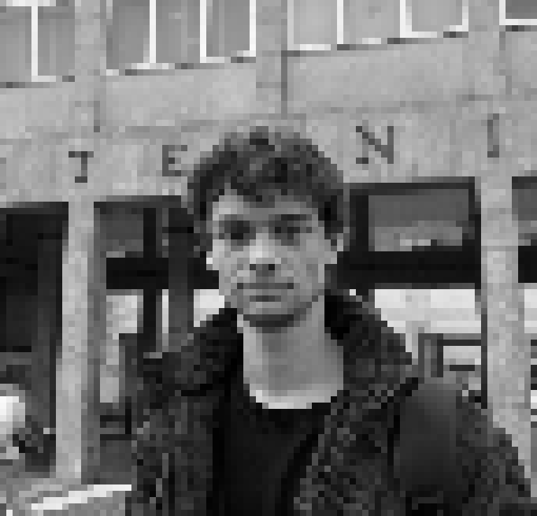
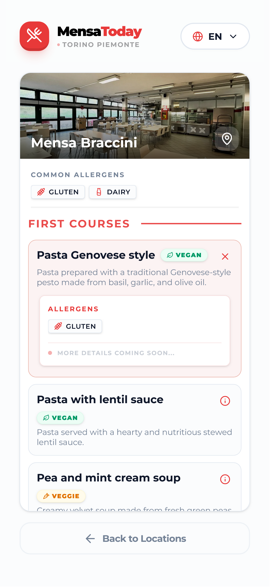
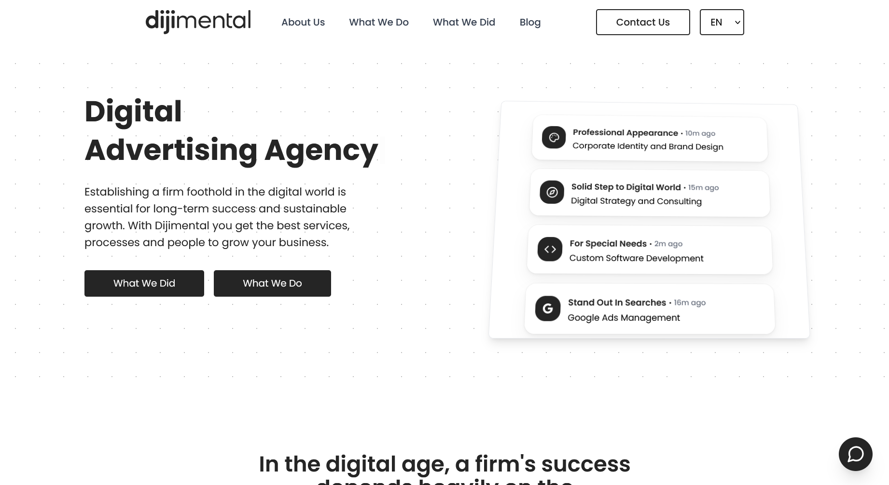
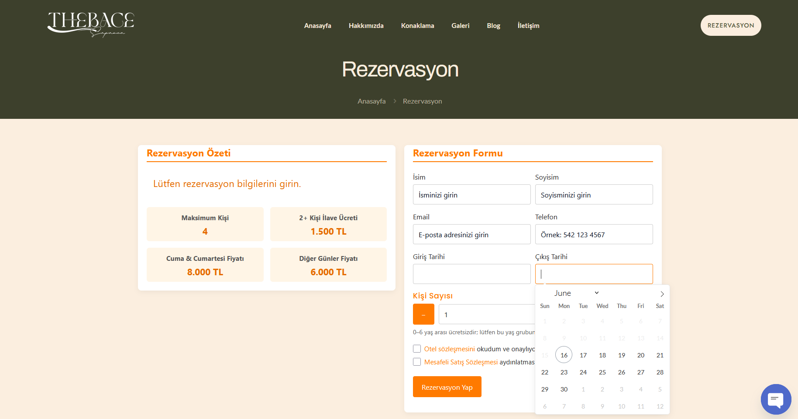
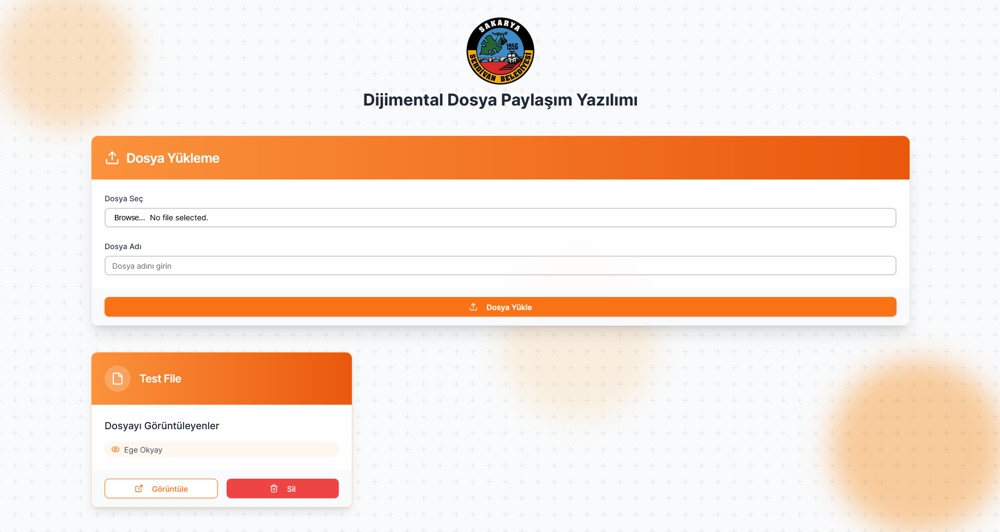
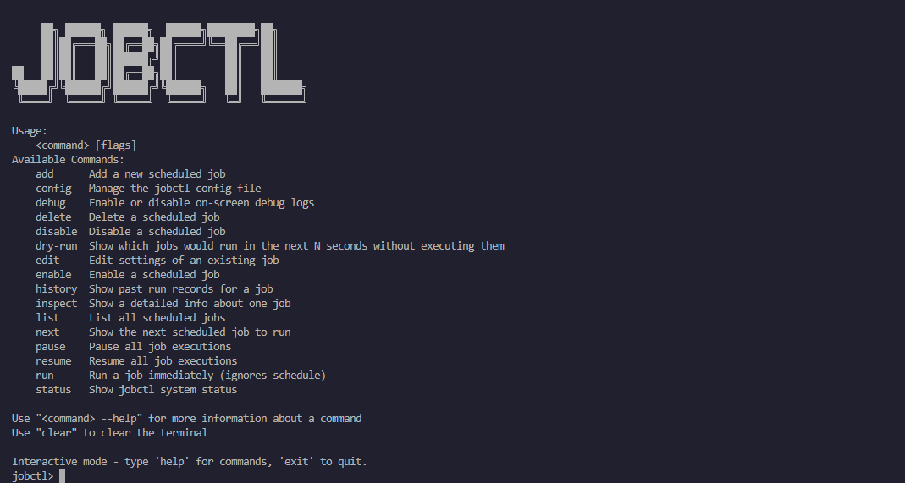
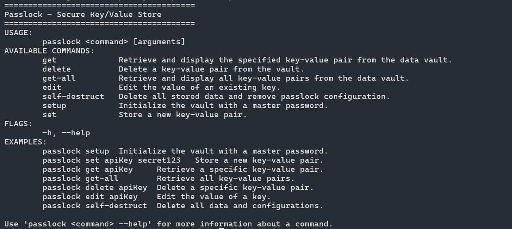

Software engineer focused on backend and server-side systems.
Currently employed as XXX XXXXXXX at XXXXXXXXXX.
Studying Computer Engineering @Politecnico di Torino
Contact me at egeokyay0@gmail.com

Dijimental |
Software Engineer Full-time Jun 2024 - Sep 2025 Serdivan, Sakarya, Türkiye
Skills: Software Architecture, Full-Stack Development, Team Leadership, Nginx, Caddy, Docker, Remix, NestJS, Go, Flutter, PHP |
Dijimental |
Software Engineering Intern Internship Jun 2023 - May 2024 Serdivan, Sakarya, Türkiye
Skills: PHP, Full-Stack Development, Express.js |
MensaToday (WIP) |
 A multilingual cafeteria tracking app for EDISU Piemonte that automatically collects and displays daily menus from Instagram stories.
Stack: React Router, Tailwind, Supabase, Hono, Go, Gemini API, Cloudflare Workers, Github Actions |
Custom Agency Site |
 Hand coded our agency’s new site to handle a complete rebrand. It’s a fast, SEO optimized SPA that includes a blog and an admin dashboard.
Stack: Next.js, Tailwind, MySQL (with Prisma ORM) |
WordPress Booking & Payment Plugin |
 A custom built solution for the business to take bookings and payments directly on their site.
Stack: PHP, jQuery, MySQL, Vepara Payment System |
Serdivan Municipality Internal Content Portal |
 A platform for managing and tracking internal document sharing.
Stack: Remix, PostgreSQL (with Prisma ORM) |
Lightweight CLI Task Runner |
 A lightweight terminal tool I built for scheduling and managing recurring shell tasks.
Stack: Go |
AES-Encrypted Terminal Vault |
 Built a simple CLI tool called PassLock to manage passwords directly from the terminal. I wanted something lightweight that didn't sacrifice security, so I used AES encryption to keep everything locked down.
Stack: Go |
| Encryption Strategies for Data Security: An Analysis of Modern Practices | read |
| ADYS - Emergency Situation Communication System Report | read |